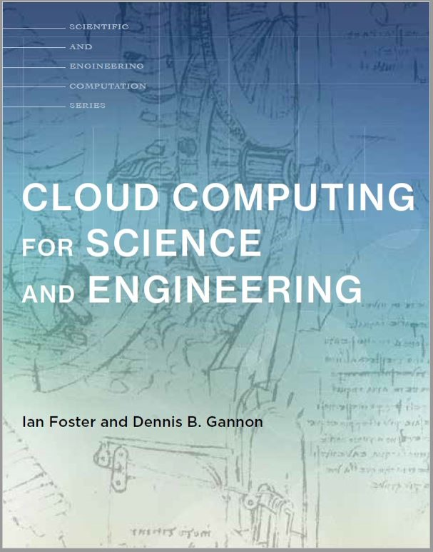

Course Information
CS 525T: Cloud Computing
Semester: Spring 2018
Time: 6:00pm to 8:50pm
Days: Wednesday
Location:Atwater Kent 232
Course Catalog Description
Modern data centers are massive warehouses that host hundreds of thousands of physical servers. Those large amount of interconnected servers provide the infrastructure foundations for today's evolving cloud computing platforms. Cloud computing, with its clear economic benefits and flexible resource offerings, has gained increasing popularity over the past decade. Today's cloud platforms host a plethora of services, including traditional web service, mobile backend, and big data analytic, and allow customers the freedom to deploy full stack applications in the cloud.
In this course, we will discuss recent research on cloud computing and data centers, with the goals of better understanding and exploring the key challenges faced by the large scale data centers and cloud platforms. The class will cover topics such as the use of virtualization in data centers, automated resource management, data center reliability, energy efficiency, and security in shared cloud environments. The course will combine reading/discussing research papers with a course-long research project in the area of cloud computing. Students will pick a research topic to explore in their project with the guidance from the professor.
Teaching Staff
Course Instructor: Tian Guo
Email: please post via the class discussion board
Office: Fuller Labs 138
Office Hours: Tuesdays, 1pm-2pm. Appointments also are available.
Schedule and Readings
Below is a tentative course schedule which will change as we progress through the course. All students are expected to have read the readings prior to arriving for class on the indicated date. Additional resources will not be included in quizzes. If you find something interesting about cloud computing you would like to share, let me know!
| Date | Description | Readings | Activities | Assignments [Due 5pm] |
Additional Resources |
|---|---|---|---|---|---|
| Jan. 10, 2018 | No class (Monday Schedule) | ||||
| Jan. 17, 2018 | Introduction, Cloud Computing Overview Week one notes |
Chapter 1 Above the Cloud |
Labs: Getting Started How to read a paper? Review: guideline, templates |
NIST Definition of Cloud Computing RackSpace's view on cloud service models Amazon CEO's keynote |
|
| Jan. 24, 2018 | Cloud Storage: Part 1 Week two notes Presenters: Dan, Ebenezer |
Chapter 2, 3 | Labs: AWS S3 | Reviews: GFS,Dynamo Presentations: GFS,Dynamo |
Consistency choices Eventual consistency |
| Jan. 31, 2018 | Cloud Storage: Part 2 Presenters: Charlie, Tejbir |
Reviews: Spanner, Tao Presentations: Spanner, Tao |
|||
| Feb. 7, 2018 | Computing in Cloud: Part 1 Presenters: Ruochen, Jie |
Chapter 4,5 | Reviews: Xen, Live Migration Presentations: Xen, Live Migration |
||
| Feb. 14, 2018 | Computing in Cloud: Part 2 Presenters: Heric, Zhaoning |
Chapter 6,7 | Reviews: Slacker, VM vs. Containers Presentations: Slacker, VM vs. Containers |
||
| Feb. 21, 2018 | Course Project Proposal Presentation | Lab EC2 | Final Project Proposal | ||
| Feb. 28, 2018 | Cloud Workload Characteristics Presenters: Sam, Liang |
Reviews: Google workload, private cloud Presentations: Google workload, private cloud |
|||
| Mar. 7, 2018 | No class (Spring break) | ||||
| Mar. 14, 2018 | DC Resource Manager (I) Presenters: Shijian, Zili |
Review: Mesos, YARN | |||
| Mar. 21, 2018 | DC Resource Manager (II) Presenters: Zhenyu, Zetian |
Review: Borg, Slicer Final Project Design |
|||
| Mar.28, 2018 | Configuration Presenters: Bolun, Zhanfeng |
Review: CherryPick, PARIS | |||
| Apr. 4, 2018 | Economics Presenters: Sachin, Tianyu |
Review: SpotCheck, Proteus | |||
| Apr. 11, 2018 | Task Scheduling | Review: Sparrow, Mercury | |||
| Apr. 18, 2018 | Consensus and summary | Potpourri Paper questions | |||
| Apr. 25, 2018 | Final Project Presentation | Final Project Deliverables |
Course Policies and Procedures
The following represent the official policies and procedures for the course. Please review this information and, if you have questions, discuss them with the professor as soon as possible.
Official Communication
Class discussion, class hand-outs, emails to the student's WPI email account, the class discussion board, and the course Web pages are avenues for official course communication. Students are responsible for any information posted through these venues.
Course reading materials
Required textbook :- Cloud Computing for Science and Engineering, Ian Foster and Dennis B. Gannon, The MIT Press, 2017 (Available online here).
In this course, we will be reading selected chapters from required textbooks and supplement materials provided by the instructor. Although there are a lot of free online resources for cloud computing, the rationale of a textbook is to provide the student a systematic road map in learning. Students will be responsible for obtaining the reading from the links provided by the instructor and, if needed, printing it out for reading.
Course Grading
Grading will be 15% quizzes, 30% assignments, 25% activities and 30% final project.
- Quizzes (15%): Quizzes will be at the beginning of each class. Quizzes are available in two forms: through InstructAssist (IA) or printed version. Quizzes questions will be from assigned readings for class on the indicated date and are designed to help you internalize important cloud computing concepts.
- Assignments (30%): Assignments will be due at 5pm on Wednesdays. Expected assignments are in the form of research paper review (including peer review), and programming assignments. These assignments help expose you to state-of-arts cloud computing solutions.
- Activities (25%): Expected activities include labs and research paper presentations. Every week will include an in-class lab. These labs provide an hands-on opportunity for you to learn more about cloud computing technologies.
- Final Project (30%): There will be one final project that students pursue in teams of two people. The instructor will provide several potential project ideas that students may choose from. Students are strongly encouraged to propose their own projects.
Late Submission Policy
No quizzes may be submitted late. No make-up quizzes will be available.You will have 4 flex days (except for presentations) to submit assignments late without penalty during the semester, which may be allocated however you wish. Beyond the use of your flex days, late assignments will be penalized 10% per day.
However, any projects submitted after 5pm on Wednesday, April. 25, 2018 will not be graded.
Access to Public Cloud Resources
It is critical that you obtain the access to public cloud for this course.Both Amazon AWS and Google Cloud provide free education credits. Sign up for AWS Educate ($100 credits annually) here and Google Cloud Platform Free Tier($300 free-tiers). If needed, I will distribute additional cloud credits for use in this course.
Please pay special attention to your cloud bills and plan carefully about how you want to allocate your credits. Note, most cloud resources are charged based on usages. If you are not using the resources, please remember to follow the guidelines to release unused resources to avoid unnecessary charges.
Course Participation and Professionalism
Participating in course activities is an integrated part of this course. You are expected to engage in various forms of in-class activities such as pair discussion and in-class labs. You will need a laptop to complete most activities.Students must treat each other and the teaching staff with respect at all times. Disagreement, debates, and criticism of ideas are healthy aspects of academic environments; however, students should avoid demeaning language or comments which can be taken personally. The ability to handle conflict professionally and work with a variety of people is an acquired skill, yet it is increasingly important in technical careers.
Student Disabilities
If you need course adaptations or accommodations because of a disability, or if you have medical information to share with me, please make an appointment with me as soon as possible. If you have not already done so, students with disabilities who believe that they may need accommodations in this class are encouraged to contact the Office of Disability Services (ODS) as soon as possible to ensure that such accommodations are implemented in a timely fashion. This office is located in the West St. House (157 West St) and their phone number is 508.831.4908.
Academic Honesty
The WPI Academic Honesty Policy describes types of academic dishonesty and requirements in documentation. In the case of academic dishonesty, I am required to report the incident to the Dean of Student Affairs. Further, my penalty for academic dishonesty is to assign a NR grade for the course.